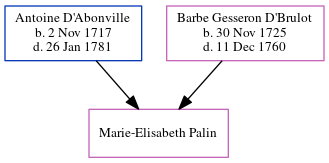

Marie-Elisabeth Palin c1749 -
[ Home ] | [ Calendar ] | [ Surnames Index ] | [ Census Index ] | [ Family History ]The child of Antoine D'Abonville and Barbe Gesseron D'Brulot, Marie-Elisabeth Palin was baptized in Québec on Nov 15, 1749.
Parents
- Antoine was born on Nov 2, 1717
- Barbe Elizabeth was born on Nov 30, 1725
Family Tree
Generated by ged2site. Last updated on Jun 8, 2024